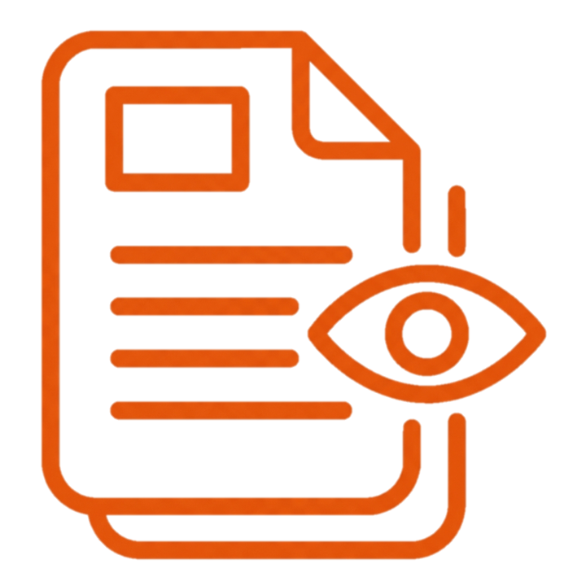

Personal Portfolio Website
Personal Portfolio Website
Tools Used:
Tools like Antigravity and Claude Code have completely changed the game for Product Managers. By bridging the gap between a great idea and a functional product, these tools empower Product Managers like me to bring our ideas to life with just a few prompts. It wasn't always this easy. Previously, getting a concept from your head to users' hands was frustrating - you needed to find the right freelance developers to build your product, spend money to hire them, and constantly supervise them to ensure it was built without losing your original vision in translation.
Now, these AI coding platforms function as my personal developers. It's a massive shift that enables me to move directly from the ideation stage to a live launch, bypassing traditional development bottlenecks and bringing my vision to life faster.
When I was contemplating building my own Product Portfolio, I had a rough blueprint in my head that I just needed to bring to life. It was a simple structure—a personalized website which would have the following sections:
- A Homepage that welcomes visitors and gives a brief introduction about me.
- A Resume page that lists every professional detail about me, including my education, my career to date, the tools I am proficient in, the languages I can speak, and my competencies.
- A Projects page where I can showcase the products I have worked on in my career and the projects I conceptualized to demonstrate my Product Development capabilities.
- A Contact page that recruiters, hiring managers, and anyone else interested in connecting with me can use to reach out personally.
All I needed was Antigravity installed on my personal laptop and about two weekends of dedicated vibe coding to bring this portfolio to life.
You can follow the step-by-step process mentioned below to build your own portfolio using Antigravity.
And as always, you can use the contact section of this website to reach out to me directly if you have any other questions, or if you are interested in hiring me for your team! :)

Styling and ContextI kept in mind that my portfolio was specifically for professional purposes, and its look and feel should reflect that accordingly. The website should not be flashy with too many heavy elements, ensuring it would not take too much time to load. It needed to be lightweight and easy to navigate. Since recruiters and hiring managers are my priority audience, I wanted my portfolio to primarily serve two functions:
- It should showcase my capabilities and work experience.
- It should push my CV to recruiters and hiring managers, preferably directly to their email inboxes.
I was also cognizant of the fact that not all recruiters and hiring managers have enough time to go through my portfolio on their workstations. Therefore, the website needed to be equally usable on desktop and mobile, so they could easily navigate it on their phones while on the go.
The same thought process is reflected in how I set the context in my prompt:
Create a professional portfolio website for myself. My name is Ashwin Joshi, and I am a Product Manager looking to share my background, my career to date, my education, my qualifications, all of the products I have built so far, and new products that I conceptualize with recruiters and hiring managers.
The website should be in a light theme and professional in nature.
It should be easily viewable and navigable on both desktop and mobile browsers.
There should be a banner at the top that contains my name on the left and CTAs to different pages of this portfolio on the right.Homepage
As already mentioned, the Homepage was to serve as the welcome page for visitors. Since the aim was to minimize the time recruiters and hiring managers spend getting to know me and to make their lives easier, the Homepage had to contain a brief introduction about me, my competencies, and my current job details. It also needed highly visual buttons so that after reading my brief introduction, the visitor has three options:
- Check out my professional career to date in detail.
- Check out my projects (both actual and conceptualized) in detail.
- Reach out to me.
The same thought went into my prompt for the Homepage. It focuses on my brief introduction and places special emphasis on ease of navigation for visitors:
The first page that a visitor reaches when they visit my website, the Homepage, should contain a welcome message at the top, my photo at center stage, my current role (Product Manager at HSBC), and a headlining introduction about myself.
On scrolling down a little, add a section called "My career so far" that contains a brief description of my career to date.
This "My career so far" section should also list my core competencies.
Scrolling down to the bottom of this Homepage, there should be CTA buttons to the following pages of this portfolio:
1. View my Resume
2. See my work
3. Contact meResume
The Resume page took the least amount of time to make since it just lists everything already present in my CV. Consequently, the Resume page is the best place for me to push my CV toward recruiters and hiring managers. The prompt for this page clearly reflects that:
The "View my Resume" CTA at the bottom of the Homepage should navigate the visitor to a "Resume" page. This page should contain:
1. A list of my educational qualifications with the college name, the exact qualification I achieved, my specialisation, and the duration of attending the college in years.
2. My professional summary, featuring a list of organisations I have worked with to date, each organisation's logo, the duration of working there in months & years, and a long description of what I did in that role and organisation.
3. A certifications section where I can share my professional certifications, including the name of the professional certification I achieved, the month & year I got it, and the issuing authority.
4. My list of competencies with generic vector images next to each of them, in a "tags" UX.
5. My list of tools that I am competent in, with the logo of each tool listed, in a "tags" UX.
6. My list of languages that I can speak, with a specified proficiency level for each language.
7. An option to download my resume in PDF format or an option to email my resume PDF directly to the visitor's inbox. If the visitor clicks on download resume, download the resume PDF for them. If the visitor clicks on the option to send the resume directly to their email, prompt them for their email address, ensure it is valid, and then show a message that my resume PDF has been successfully sent. The email integration can be handled later when the website goes live. For now, a mock UX will work.
Add a "Resume" CTA on the right side of the top banner. Ensure it gets highlighted every time a visitor is on the Resume page, so they know where they are.Projects
The projects page needed to be clean and simple. To generate maximum impact, I decided to go with a "Cards" format on the first page that highlights exactly what product each project was about, which organisation it was for, and which of my core competencies were used. To make it visually attractive, I also decided to add a cover image to each card that matches the theme of the project.
Having worked with miro boards in one of my previous projects, I was aware of how capable they are for flowcharting. To give my projects a visual reference of how I did Product Discovery and Solutioning, I also decided to embed miro boards into each Project page:
The "See my work" CTA at the bottom of the Homepage should navigate the visitor to the "Projects" page. This page is divided into 2 tabs at the top: projects that I have actually worked on and projects that I am proposing + AI projects.
On each of these tabs, there will be cards acting as CTAs that link to the respective project pages. The cards will have a cover image at the top, followed by a title, subtitle, and core competency tags.
Clicking on one of these cards will navigate the user to the respective project page. The project page will have a cover image at the top. This will be the same cover image used on the card. The cover image will be followed by the organisation's logo with the title (same as the card) on the same line, then the project duration, and then the tools used (use the same tag format as in the Resume page's tools section).
Follow the tools used with an embedded Miro board:
<Enter miro board embed code here>
Below the embedded Miro board, add a text section with the following headers. Each title comes with its own unique vector image:
1. Problem Statements
2. Discovery
3. Solution
4. Implementation Process
5. Results
The results section should highlight the impact of the project by mentioning each metric in its own box with the exact metric number at the top in a large font, followed by a header, followed by subtext.
Add a "Projects" CTA on the right side of the top banner. Ensure it gets highlighted every time a visitor is on the Projects page, so they know where they are.Contact
The contact section was the easiest to build since it was kept simple with only my contact details:
The "Contact me" CTA at the bottom of the Homepage should navigate the visitor to the Contact page. This page contains a link to my LinkedIn profile (https://www.linkedin.com/in/ashjoshi93), my phone number (+91-9765161771), and my email address (ashjo966@gmail.com). The LinkedIn profile link should be clickable and should redirect the visitor to my profile in a new tab of their browser.
Add a "Contact" CTA on the right side of the top banner. Ensure it gets highlighted every time a visitor is on the Contact page, so they know where they are.